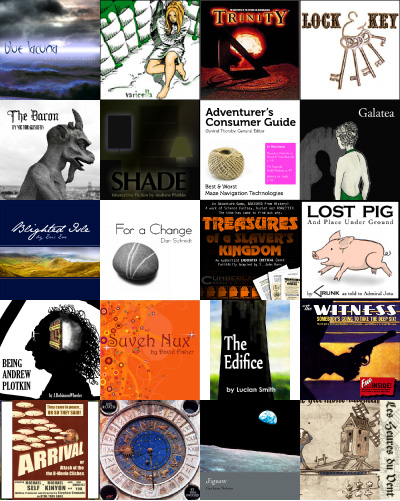

Chapter 26: Publishing
§26.1. Finding a readership; §26.2. How a novel is published; §26.3. How interactive fiction is published; §26.4. The IF Archive; §26.5. A Website of Its Own; §26.6. IFDB: The Interactive Fiction Database; §26.7. Competitions; §26.8. The Gaming Avant-Garde; §26.9. The Digital Literature Community; §26.10. A short concluding homily
| Contents of Writing with Inform | |
| Chapter 25: Releasing | |
| Chapter 27: Extensions | |
| Indexes of the examples |
So the new work of IF is written, and tested, and has all its bibliographic data and a fancy cover illustration lined up. What next?
There is a thriving community of readers and writers of interactive fiction, and it is sometimes supported by grants from arts foundations and other cultural bodies: there's increasing attention from the academic world, and a general consensus has gradually grown that interactive fiction is a "valid" artistic medium for expression. Like poetry, it is something that a few people like a lot, and which most people can see the point of, even if they don't read it themselves. Over the last thirty years, a few authors have established durable reputations: they give occasional newspaper interviews, and have a very low-key kind of fame. There are competitions, and annual awards ceremonies. Newcomers are always welcome.

With some important exceptions, most works of interactive fiction have never been "published" in the sense of being issued for sale by a for-profit company. For the most part, IF has not been commercially valuable since about 1987. Successful authors of IF generally take the view that while they could, perhaps, make a very modest amount of money from sales, it would be a nuisance to collect and make no meaningful difference to their incomes; it would cut the number of readers, whereas one wants the satisfaction of being read; and besides, the whole culture of IF has always been characterised by giving and sharing. (Inform itself is free.)
Inform has nevertheless been used to produce commercial works (generally add-ons or bonuses to other games), and users are very welcome to sell works created by Inform with no royalty or requirement for rights clearance. It's also widely used in education, and as a prototyping tool for other kinds of story.
| Start of Chapter 26: Publishing | |
| Back to Chapter 25: Releasing: §25.24. Rubrics | |
| Onward to §26.2. How a novel is published |
§26.2. How a novel is published
Suppose that a (traditional) novel has been delivered to a publisher: the author has handed it over as a pile of twenty chapters of prose, and feels that it is finished. In fact there is much still to do:
(a) Editing. An editor works through the book, looking for problems in the plot, uneven passages, difficulties of tone and a hundred other nuanced points. The author generally then revises the book and submits again.
(b) Copy-editing. A copy-editor fixes punctuation errors, awkwardly worded sentences and other low-level problems.
(c) Bibliographic data is added.
(d) Printing. The text is given a clean, readable rendition, and no longer looks like a home-made typescript.
(e) Cover art is added. Even unillustrated novels have pictorial covers, and these images are often used to set the tone for the book - they set the reader's frame of mind, so something more is happening than mere marketing.
(f) A back cover blurb is added. This will also find its way into catalogues, onto book trade databases, appear on Amazon.com and so forth. Both a description and a lure, it gives a flavour of the work without actually being any part of it.
(g) Binding. Not only are the inside pages printed, but maps, plates of illustrations, free CDs, fold-out charts, etc., may be tipped in to the binding.
(h) Legal deposit. Copies are lodged with libraries of record, such as the British Library or the Library of Congress, to ensure that the work cannot be lost from cultural history. (In most countries, this is a legal obligation for publishers.)
(i) Shipping. Copies are sent out to bookshops.
(j) Publicity. The author and publisher combine to put out the word, circulate leaflets, put up posters and so forth.
(k) Reviews and awards. Reviews are published, usually stirring up interest in the book. These having been stellar, a few months later the author bashfully accepts a Pulitzer Prize, the Booker or some similar token of cultural esteem.
| Start of Chapter 26: Publishing | |
| Back to §26.1. Finding a readership | |
| Onward to §26.3. How interactive fiction is published |
§26.3. How interactive fiction is published
If we take the eleven novel-publishing stages of the previous section in order, we find that pretty well the same business goes on for works of IF.
(a) Editing. Working with a small number of trusted play-testers, and taking their responses seriously even when inconvenient, will almost always produce an immeasurably better work: not just better functionally, but better artistically, and more enjoyable. Play-testers can usually be recruited by placing an ad on www.intfiction.org/forum.
(b) Copy-editing. Play-testers will also pick up small stuff - spelling mistakes, and punctuation errors - but note that Inform for OS X will spell-check our source text on request.
(c) Bibliographic data is added.
(d) Printing. Clicking Inform's Release button is the equivalent the-die-is-cast moment.
(e) Cover art is added. As we saw in the previous chapter, Inform can add a cover image as part of the Release process, though it will not itself draw and design that image - like a printer, it expects to be supplied with the original.
(f) A back cover blurb is added. Inform does indeed allow us to compose such a piece of text and include it with the work's bibliographic data.
(g) Binding. The story file, which is akin to the inside pages of a book, is combined with its cover art, bibliographic data, and also with other non-textual materials provided by the author (booklets, sound samples, images, etc.). Inform does much of this automatically, producing a composite object called a "blorb".
(h) Legal deposit. The work is uploaded to the IF Archive (www.if-archive.org), whose librarians shelve it in the appropriate section. More on this later.
(i) Shipping. A work of IF is electronic rather than physical, so nothing is actually moved, but many authors like to put their works on their own websites as well as placing them in the Archive.
(j) Publicity. Authors often announce a new work on IFDB (ifdb.tads.org). Authors often also set up a personal web page about the work. Inform can generate such a web page automatically, as we saw in the chapter about releasing new works.
(k) Reviews and awards. The IF community has competitions and awards in abundance, and several websites gather reviews. It is usually safe to say that a well-written work will not go unnoticed if it is sensibly publicised.
| Start of Chapter 26: Publishing | |
| Back to §26.2. How a novel is published | |
| Onward to §26.4. The IF Archive |
Publishing an IF story consists of two steps. One is the technical task of making the story available to players - unless the plan is simply to email it to close friends, that means hosting it somewhere on the Internet. The second is the promotional task of letting people know the work exists, and where to find it.
It is a community tradition that all serious work is uploaded to the IF Archive, which is IF's answer to a national library. This is a mirrored, stable collection of thousands of interactive fiction games and programming languages, manuals, fanzines, maps, walkthroughs, and other materials. As such, it's likely to stay around even if a personal website goes off-line; it's also the primary resource for people doing scholarship on interactive fiction (and there are a growing number of these).
The Archive is very much a library, for long-term archiving, rather than a book-store. The catalogue is sober and textual, and there are no visual shop-windows, or posters advertising new titles hot off the press. Newcomers sometimes need practice finding their way around. And the Archive hosts story files (and associated manuals, as appropriate) but not advertising for them - it does not provide web-hosting for authors to set up mini-sites.
Uploading a work to the IF Archive is not too difficult, and can be done in two ways. One way is to use the archive's web form at:
http://www.ifarchive.org/cgi-bin/upload.py
The other is to create a new page at the Interactive Fiction Database, at:
http://ifdb.tads.org/
It's then possible to upload the story file to the IF Archive from IFDB. This is easiest all round, since it allows both IFDB and IF Archive to be updated at once.
In either approach, an author chooses and uploads a file, and accompanies it with a name and email address (so that the archive maintainers can verify the legitimacy of the work). The "About this file" field is for a line or two explaining what the story is -- its full title and any critical information -- and is used in generating the archive index. This is normally much shorter than the "blurb" described earlier. There's also a field to suggest where in the archive the story should be stored, but this is optional and intended chiefly for people expert in how the archive is filed. The archive maintainers will file a new story file in the obvious directory for its format. For Inform works, that means other Z-Machine - "z-code" - or Glulx story files. The maintainers sometimes place the same story file in multiple places in the Archive, using links.
As with all large libraries, it takes the Archive a little while for new acquisitions to be processed. When this happens, one of the volunteer maintainers will email with the official URL from which anyone can now download the story file.
Committing a story to the Archive is meant to be permanent. While the maintainers will happily replace older versions of stories with new improved releases, they are less eager to remove stories entirely. If that doesn't seem appealing, or if we do not want our story to be treated as freeware with essentially unlimited distribution, the Archive may not be a good choice. But it is deeply valued by the IF community, and has saved many works which could otherwise easily have been lost forever. Many contributions important in the history of IF were made by people who are now not easy to trace, and whose websites are long gone. But their work lives on.
| Start of Chapter 26: Publishing | |
| Back to §26.3. How interactive fiction is published | |
| Onward to §26.5. A Website of Its Own |
While any good story file ought to go into the IF Archive, it's probably wise also to provide an easier-to-use home for the work, by putting up a web page and a copy of the story file on a private web host. That host should ideally be as stable as possible, so that the URL is likely to remain fixed for what might be a long period. Freeware stories have a long period of viability relative to commercial games, which means that players may still be hearing about and checking out a story years after its initial release. A stable address helps everyone with links, and makes it easier for Google to direct people.
Of course creating a web page involves a little design work, but tools are widely available which make this quite easy nowadays. And as we've seen, Inform can automatically generate web pages and whole small mini-sites to put all the information about a story file into a tidy format, even including the ability to play online.
| Start of Chapter 26: Publishing | |
| Back to §26.4. The IF Archive | |
| Onward to §26.6. IFDB: The Interactive Fiction Database |
§26.6. IFDB: The Interactive Fiction Database
Once the story file has a home online, and a URL (that is, a web address) at which it can be found, it needs to be registered with IFDB:
http://ifdb.tads.org/
the Interactive Fiction Database. Just as the IF Archive is a repository for stories themselves, IFDB is a database containing information about them - titles, authors, locations, solutions, reviews, recommendation lists and more.
The name IFDB echoes the Internet Movie Database (IMDB), but in some ways it is also like the iTunes Music Store. For one thing, it's a shop-window for what's new, with cover art to catch the eye. For another, some interpreters allow players to browse IFDB directly and launch new stories in a single click. This kind of integration is only likely to increase, so story files unregistered on IFDB are likely to be much less visible to players of the future. Promoting IF is all about pulling in impulse players -- people who are passingly interested, but might not try the story if there is any significant work involved is setting it up. This is what IFDB is all about.
IFDB is community-editable, like Wikipedia, though editors are required to create an account and log in first -- this is free, of course. A standard form is provided for creating a new record (accessible by selecting the option to add a story listing). More or less the same information that appears on Inform's library card in the Contents index needs to be copied over: there's space for the author name, story title, genre, and so on. IFDB will also ask for an IFID, a code identifying the story uniquely. Inform generates one of these automatically for each project, and it, too, is on the Library Card. It can always be found by typing VERSION into the compiled story and looking at the line that says
Identification number: //[some letters and numbers]//
The part between the // marks is the IFID. If there's cover art, that can also be uploaded, and good cover art makes a big difference to shop-window-appeal.
The download link should give the most stable URL available. If you have not yet uploaded your story to the IF Archive, you may do so by selecting the "Upload it to the IF Archive" link instead of pressing the "Add a Link" button. The benefits of submitting your story to the IF Archive in this manner are two-fold. One, IFDB will fill in much of the information required by the IF Archive for you. Two, the link to your story will not appear until the IF Archive maintainers move it to its permanent home in the archive, at which point the download link will be automatically updated and presented on the story page.
If you choose to upload your story file to the IF Archive independent of IFDB, then once the story file is safely up at its permanent home on the IF Archive, that is an ideal address to quote here. Otherwise, the URL of the work's own website is best. (Note that the IFDB entry can always be edited later, if the URL moves.)
Commercial works which aren't available as free downloads can be registered on IFDB just the same, and this is almost certainly a good idea.
One very common way to get players for IF is to enter the story into an IF competition. The annual IF Competition is the most prestigious and has the widest field, but the Spring Thing, the One Room Game Competition and other events also catch people's attention. Entering a competition is a path of least effort for authors promoting their new work, because the competition organizer usually takes care of hosting and archiving submitted stories, promoting the competition as a whole, collecting votes, and encouraging players to post reviews. Different contests have different arrangements. The ifwiki usually posts a list of current and upcoming competitions, as well as lists of results for those recently past, on the front page:
http://www.ifwiki.org
Some competitions also have their own websites, at least at the relevant times of year.
All the same, there are many IF works that aren't cut out for competition release. Competitions tend to be best for short or medium-short works, because judges don't necessarily have time to play a lot of long stories at once, and sometimes this is a condition of entry.
It's also good for publicity to win one of the annual XYZZY Awards. All interactive fiction stories released in a given year are eligible, and authors do not need to do anything to enter. As with the Oscars, though, you can't plan to win: it happens or it doesn't.
| Start of Chapter 26: Publishing | |
| Back to §26.6. IFDB: The Interactive Fiction Database | |
| Onward to §26.8. The Gaming Avant-Garde |
The IF community is not the only potential audience for a work of interactive fiction. Some authors have successfully written and pitched IF to other groups -- audiences interested in a particular historical period, role-playing story universe, or web comic, for instance -- and those groups have to be reached through their own community forums and meeting places.
Even if we do write material mostly meant for the existing IF community, that doesn't mean the audience has to stop there. There are a number of independent gaming websites and blogs that feature IF reviews occasionally or regularly. These things change quickly, but at the time of writing, IF is featured with some regularity on:
JayIsGames (www.jayisgames.com): a popular blog devoted to casual games, which occasionally profiles IF. JIG has also developed its own Flash interpreter for z-code games to allow the blog to host interactive fiction without requiring the casual audience to do any downloading. Experience suggests that JIG players are most interested in short IF -- serious or lighthearted, but humor goes over especially well -- and that they prefer very rigorously implemented work where a wide variety of player actions get customized replies. Small, polished gems do well here. JIG accepts story suggestions as well.
The Independent Gaming Source (www.tigsource.com): occasionally publishes reviews or shorter announcements, and has even hosted an IF-writing competition. It may be worth drawing something to their attention.
This is hardly a complete list of gaming blogs with an interest in interactive fiction, just a collection of the most accessible ones, so it's worth doing a little research. One way is to pick a handful of works that coming closest to our own story in design and style, and search for reviews of those works. Where were they reviewed, and where were they well-received? Those venues might be good targets for our own production.
Finally, there is a constant round of competitions for independent games in general. Unlike IF community competitions, larger indie story comps usually don't require that a story be previously unreleased, only that it have no commercial funding. Some of these competitions offer substantial prizes in cash or computing equipment; some explicitly seek text-based games. Placing as a finalist in such a competition can mean having work displayed at a gaming expo or hosted on a special wesbsite, and this will garner substantial outside press. The field of competitors will be large and serious, but that doesn't mean it's not worth giving it a try.
This may all be a bit overwhelming. All the publicity options can seem like more work than we want to handle while simultaneously finishing a substantial opus. In fact, we don't have to do it all at once. One sensible approach is to release to the IF community first, and then approach the external websites later with a second or third release that puts a final polish on the story in response to player feedback. That process is even more important for indie gaming competitions. Having a release that's been polished, together with an attractive website, cover art, and maybe even some quotes from IF reviewers, can make a story look much more like a legitimate contender among semi-pro works.
| Start of Chapter 26: Publishing | |
| Back to §26.7. Competitions | |
| Onward to §26.9. The Digital Literature Community |
§26.9. The Digital Literature Community
If our work is more a work of digital literature than a game, different venues are appropriate. PlayThisThing may still be interested; JayIsGames probably will not be. Instead, we might want to look at
GrandTextAuto (http://grandtextauto.soe.ucsc.edu): a group blog about new media and interactive story-telling, which sometimes posts announcements of interactive fiction, especially of the more literary kind.
The Electronic Literature Organization (http://eliterature.org/): an organization dedicated to preserving all kinds of new media literature. They list a number of events (such as readings open to the public, new media gallery exhibits, etc.) that an IF author could participate in, and they also have a directory of electronic literature, to which we can add our own works.
Digital Humanities Quarterly (http://www.digitalhumanities.org/dhq/): A scholarly publication, but one that looks at all aspects of digital literature, new media tie-ins for scholarship, etc. DHQ has run several articles about interactive fiction in the past, including Dennis Jerz's ground-breaking research on the writing of the first text adventure, Colossal Cave. DHQ might be open either to hosting a work or to publishing an article about it.
That still leaves out a category of IF -- namely, work written for a popular reading audience, work that isn't trying to be literary but also isn't primarily game-like. There are, at the moment, no ideal venues for promoting such work (that we're aware of), but it's certainly worth pursuing.
| Start of Chapter 26: Publishing | |
| Back to §26.8. The Gaming Avant-Garde | |
| Onward to §26.10. A short concluding homily |
§26.10. A short concluding homily
It's natural to want to make a huge splash with a story, but in the IF community, instant widespread adulation for any work is pretty uncommon.
For one thing, players tend to play when they get around to it... which may be weeks, months, or even years after the initial release. Reviews trickle rather than flooding in. Appreciation builds slowly. And sometimes works that placed unspectacularly in a competition, or seemed to be overlooked in the annual XYZZY Awards, gradually come to be regarded as classics because of some pioneering technique.
So it's wise (if difficult) not to judge a story's success entirely by its immediate feedback. Even after its debut, a story can often use a little care and attention if it's to reach all its potential fans -- whether that means building further releases, posting hint files or walkthroughs, developing new websites, or approaching outside reviewers.